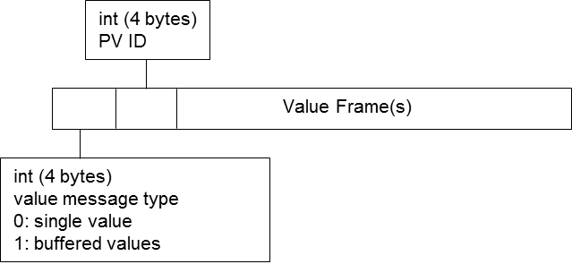
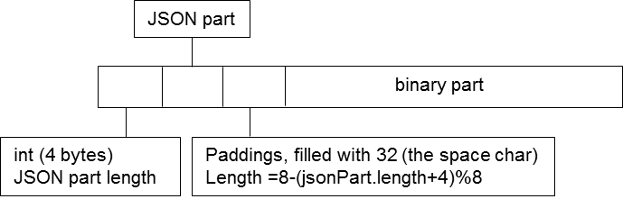

The WebPDA (WebSocket-based Process Data Access) protocol enables two-way real-time data communication between WebSocket client and server.
In WebPDA, each real-time data channel is called a Process Variable (PV). A PV represents a variable from the data source, which is usually related to a process. For example, temperature, stock price, blood pressure, CPU and memory usage etc,. Each PV is identified by its name, so each PV should have a unique name on the same server.
A typical communication sequence has been shown as below. WebPDA server sits in the middle to bridge the communication between data source and clients. The way for the WebPDA server to talk the data source is not specified. For example, it may directly read the CPU and memory usage of the server, or connect to a database or control system.
WebPDA communication sequence
The protocol is built on WebSocket. The sub-protocol name is
org.webpda
. It uses JSON format text message for all communications except for
PV's value message, which uses binary format so it can keep the
float precision with the least space (It may change to use text
message later when WebSocket compression is widely adopted).
In this specification, the message which is sent from client to server is called Client Command, such as login, create PV, close PV etc. It is called command because the server usually needs to execute an action upon receiving the command. The message which is sent from server to client is called Server Message.
Each client has a unique session on server and the session is isolated from others.
Client command is the message sent from client to server. For each
client command, it has a
commandName
property so the server can identify it. For the commands that should
be protected from authorization, it has an authorization key that
can be used for the authorization configuration. A command can only
be executed by users who have been configured to own the
authorization key. The details of each command is described below.
{ "commandName" : "Login",
"username" : "<myname>",
"password" : "<mypassword>"
}
{ "commandName" : "Logout"}
{ "commandName" : "CreatePV",
"id" : <unique_number_id>,
"pvName" : "<name of the PV>",
"parameters" : <PV specific parameters>
}
id
is a unique number that identifies this PV on this client. PV
specific parameters is a JSON object that represents the parameters
needed to create the PV. For example, below is a command to create
a control system PV:
{ "commandName" : "CreatePV",
"id" : 7,
"pvName" : "sim://noise",
"parameters" : { "bufferAllValues" : false,
"minUpdatePeriodInMs" : 1000
}
}
CreatePV
{ "commandName" : "SetPVValue",
"id" : <id of the PV> ,
"value" : <value object>
}
The value can be any type as long as the server side can accept it.
For example, this command will write a number to a control system
PV.
{ "commandName" : "SetPVValue",
"id" : 8,
"value" : 123
}
SetPVValue
{ "commandName" : "PausePV",
"id" : <id of the PV> ,
"paused" : true|false;
}
If
paused
is
true
, it will pause the PV updates. If it is
false
, it will resume the updates.
{ "commandName" : "ClosePV",
"id" : <id of the PV>
}
{ "commandName" : "SetServerBufferSize",
"size" : <size in bytes>
}
{ "commandName" : "Pong",
"count" : <the same count number of the ping message>
}
Server message is the message sent from server to client.
{ "pv" : <PV id>,
"e" : "conn"|"error"|"writePermission"|"writeFinished",
"d" : <data of the event>
}
| Event type | Meaning | Data of the event |
|---|---|---|
| conn | connection state of the PV has changed | A boolean value. true means connected.
|
| error | Error has occurred on the PV | Error message |
| writePermission | Write permission of the PV has changed. | A boolean value. true means the PV is
allowed to write from the client.
|
| writeFinished | Last write operation on the PV has finished. | A boolean value. The value is true if last
write was successful.
|

PVValue Message binary format
Each Value Frame represents a PV value. If there are multiple values were buffered, the multiple value frames are simply concatenated. For each value frame, it is a mix of flattened JSON text and binary part. It also has few bytes of paddings after JSON part to ensure the binary part starts at an index of multiple of 8, so the client side can parse it easier.
The mixed JSON and binary format brings us both flexibility and efficiency. The JSON part can be easily extended with new properties and parsed by client side. The binary part would keep the value precision. The JSON part usually holds PV value's properties. For example, for a control system VDouble value, the JSON part may include the time stamp, alarm or display information. The binary part would be an 8-bytes representation of the double value. If some of the PV value's properties did not change in the new value, they will not be transferred again. For example, display limits, units etc,.

Value Frame